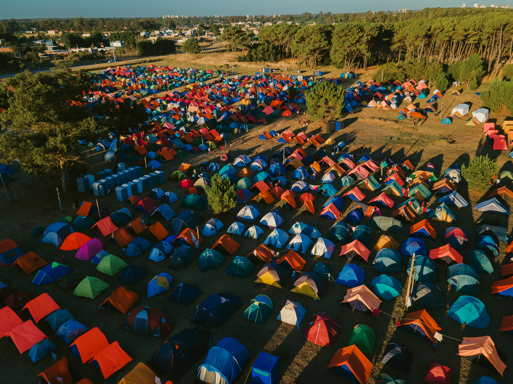
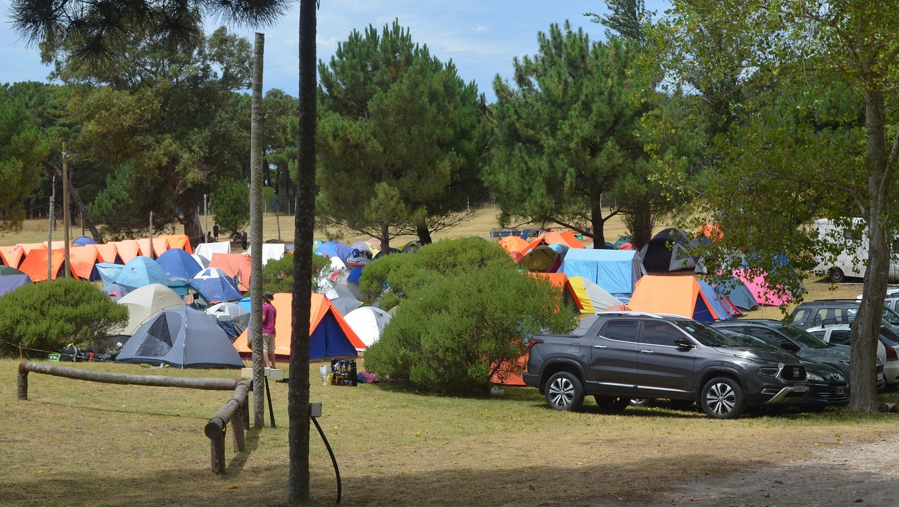

Preparar el viaje al VII Rover Moot Nacional nos llevó meses de trabajo en equipo desde Berisso. Entre rifas, ventas de comida y reuniones de planificación con el Clan, logramos juntar todo para viajar en enero hacia la costa bonaerense y sumarnos a un encuentro que reunió a casi 5.000 jóvenes de todas las provincias del país.
Desde el primer día en el campo base, la convivencia fue una experiencia única. Armamos nuestro rincón de patrulla al lado de clanes de Córdoba, Salta y Chubut, compartiendo mates al amanecer y fogones nocturnos después de jornadas intensas. Participamos en caminatas por las sierras y la playa, talleres de liderazgo juvenil y jornadas de servicio comunitario en espacios públicos de la zona.

Para quienes estamos en la última etapa dentro del movimiento antes de pasar a ser educadores, el Moot fue un impulso enorme. Volvimos a Berisso con amistades de punta a punta de la Argentina y con proyectos concretos para trabajar este año en el cuidado ambiental y la participación juvenil en nuestra ciudad.